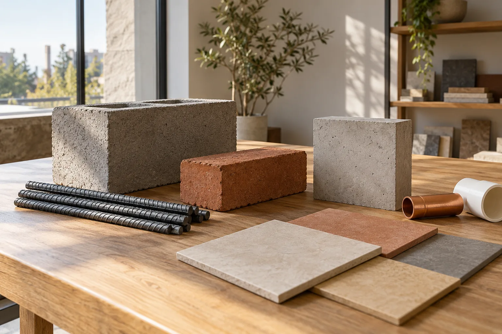
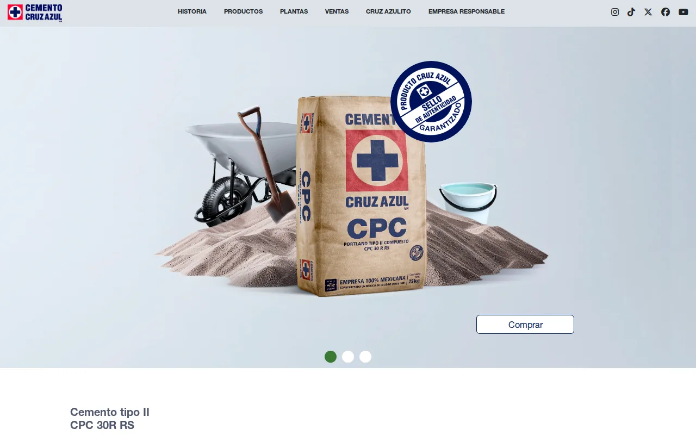
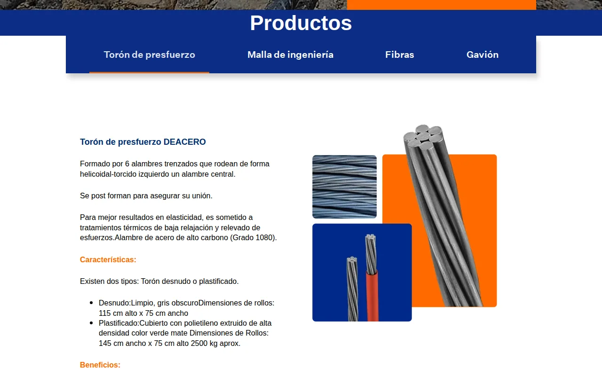
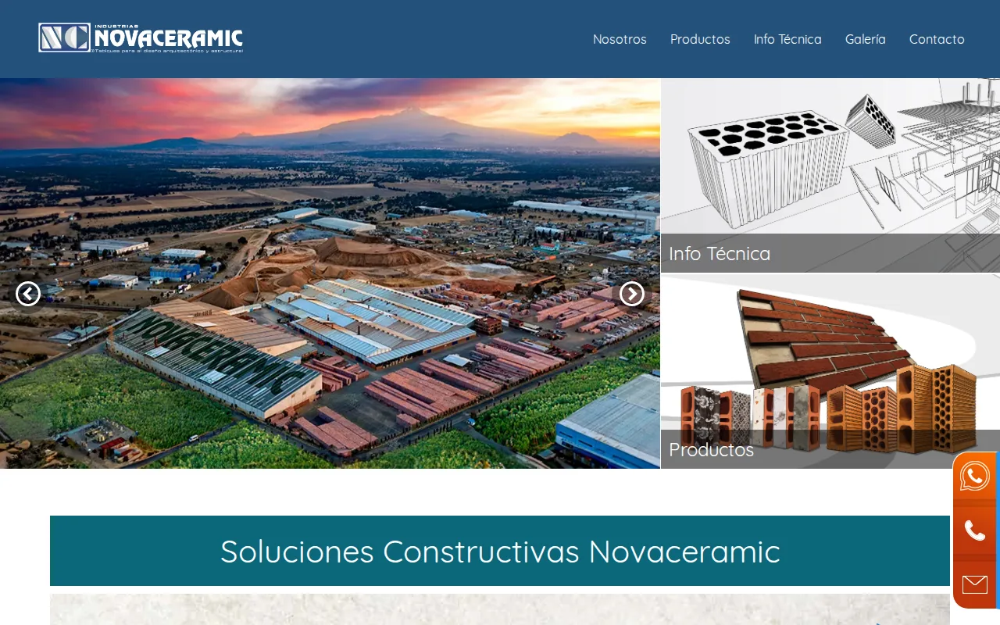

29 de septiembre de 2026
13 min de lectura
Materiales para construir una casa: qué revisar
Conoce los materiales para construir una casa en México: qué especificar, cómo comparar cotizaciones y qué revisar al recibir cemento, acero, muros y acabados.
Los materiales para construir una casa se eligen a partir del proyecto: cimentación y estructura, muros, cubierta, instalaciones y acabados. La lista suele incluir cemento, arena, grava, acero, piezas de mampostería, tuberías, conductores eléctricos, impermeabilizantes y recubrimientos. Las cantidades y especificaciones cambian según el terreno, el sistema constructivo y el uso de cada espacio.
Antes de pedir precios, conviene convertir esa lista en partidas que puedan cotizarse sin interpretaciones. Un presupuesto que dice solamente “cemento, varilla y block” deja pendientes el tipo de producto, la unidad, la entrega y la documentación que necesitas para recibirlo. Esas diferencias pueden aparecer cuando la obra ya depende del suministro.
Grupo Galarza ofrece diseño, construcción, remodelación y supervisión de obra. Esta guía te ayuda a preparar preguntas para tu proyecto y comparar cotizaciones con una misma base. Las marcas que aparecen son referencias documentales de fabricantes con sitios en español para México; el orden sigue las familias de materiales y no representa una calificación de calidad.

Imagen conceptual generada para ilustrar familias de materiales; no corresponde a una obra de Grupo Galarza.
Contenido del artículo
- Lista de materiales por etapa
- Cementantes: referencia Cemento Cruz Azul
- Acero: referencia DEACERO
- Piezas para muros: referencia Novaceramic
- Cómo cerrar instalaciones y acabados
- Cómo comparar cotizaciones con una misma base
- Plan de entregas y recepción en obra
- Preguntas frecuentes sobre materiales para construir una casa
Lista de materiales por etapa
Organiza la compra por la función del material. La siguiente lista sirve como punto de partida para conversar con quien desarrolla el proyecto; no sustituye el catálogo de conceptos ni indica cantidades. Una casa de un nivel y una ampliación sobre una vivienda existente requieren decisiones distintas, aunque compartan varios nombres de materiales.
Familias de materiales y datos para preparar su compra
Cimentación y estructura
- Materiales habituales: Cemento, agregados, concreto, acero y elementos de cimbra
- Qué debe quedar definido: Especificación del proyecto, cantidades y secuencia de suministro
Muros
- Materiales habituales: Block, tabique, mortero o componentes de un sistema ligero
- Qué debe quedar definido: Función de cada muro, dimensiones y solución constructiva
Cubierta
- Materiales habituales: Componentes del sistema de losa o techo, aislamiento y protección contra el agua
- Qué debe quedar definido: Detalles, pendientes, encuentros y productos compatibles
Instalaciones
- Materiales habituales: Tuberías, conexiones, registros, canalizaciones, conductores y equipos
- Qué debe quedar definido: Planos coordinados, capacidades, recorridos y accesorios
Acabados
- Materiales habituales: Aplanados, selladores, pinturas, pisos, recubrimientos y adhesivos
- Qué debe quedar definido: Superficie, uso, preparación y sistema de aplicación
La Conavi reúne fichas de agregados, cementantes, acero, muros, cubiertas, acabados e instalaciones en sus recomendaciones para materiales de construcción. Cada ficha distingue descripción, usos, presentaciones y recomendaciones de compra y almacenamiento. Esa separación permite identificar qué información falta cuando una cotización solo incluye el nombre comercial.
Conviene resolver las especificaciones durante el diseño de tu proyecto. Si aún estás cambiando la distribución, los niveles o el tipo de cubierta, una compra anticipada puede quedar asociada a una versión que después se modifica. Pide que la lista indique la fecha y revisión de los planos utilizados para cuantificar.
También define quién puede autorizar sustituciones. Una propuesta del proveedor puede merecer revisión, pero la decisión debe quedar vinculada al proyecto y documentada. El mensaje “es equivalente” necesita identificar qué características se compararon, qué ficha se revisó y quién aprobó el cambio.
Cementantes: referencia Cemento Cruz Azul
El cemento es una partida que conviene identificar por producto y presentación. Arena, grava, agua y otros componentes se cotizan y controlan por separado cuando la mezcla se prepara en obra. Si se compra concreto premezclado, la solicitud debe corresponder a la especificación del proyecto y a las condiciones de suministro acordadas.

Sitio oficial de Cemento Cruz Azul, consultado en septiembre de 2026.
La página de cemento de Cruz Azul muestra una denominación de producto, presentaciones y recomendaciones de manejo. Úsala para reconocer el tipo de información que debe acompañar una solicitud; la selección para tu casa corresponde a los responsables del proyecto. Una imagen del saco no basta para confirmar lo que recibirá la obra.
Qué pedir en la cotización
Solicita nombre del fabricante, denominación del producto, contenido por presentación, cantidad y precio por la misma unidad. Para agregados, separa cada material y su unidad de venta. Añade entrega, descarga, ubicación de recepción y vigencia del precio. Si hay transporte contratado por separado, identifica quién responde por coordinarlo.
Ejemplo de compra: recibes una propuesta por saco y otra por un paquete de varias unidades. Antes de compararlas, convierte ambas al mismo contenido total y conserva visibles los gastos de entrega. Si las denominaciones del cemento son diferentes, deja la comparación pendiente hasta que el responsable confirme si ambas cumplen lo solicitado.
Qué revisar al recibir
Compara remisión y pedido, identifica la presentación recibida y registra daños visibles del empaque. La recomendación de almacenamiento de Cruz Azul señala conservar los sacos sobre tarimas, en un espacio seco y protegido de la humedad. Prepara ese espacio antes de autorizar la entrega, en lugar de decidir dónde acomodar el material cuando el camión ya llegó.
Si el proveedor cambia el producto por falta de existencia, registra la propuesta antes de descargar o utilizarlo. Así puedes consultar la ficha correspondiente y obtener una decisión trazable. La prisa de una entrega no debe convertir una sustitución pendiente en una compra aceptada.
Acero: referencia DEACERO
El acero se compra conforme a planos y especificaciones. Una lista que solo dice “varilla” no permite revisar si dos propuestas corresponden al mismo suministro. Para cada partida deben quedar definidos el producto, sus características solicitadas, la unidad, la cantidad y cualquier trabajo adicional incluido.

Referencia documental del sitio de DEACERO. La imagen no prescribe un producto para tu vivienda.
El sitio de sistemas constructivos de DEACERO presenta diferentes productos de acero, entre ellos torón, malla de ingeniería y fibras. La diversidad del catálogo muestra por qué conviene solicitar una referencia precisa, sin tratar todos los productos como si cumplieran la misma función.
Compra vinculada a una partida
Pide que el presupuesto identifique cada concepto del proyecto. Distingue material, habilitado, traslado y colocación cuando se contraten por separado. Si una oferta incluye corte y doblado y otra únicamente entrega material, sus importes describen alcances diferentes. La comparación debe mostrarlo antes de elegir.
Ejemplo de revisión: una cotización utiliza peso y otra número de piezas. Solicita una relación que permita comparar las cantidades de acuerdo con las dimensiones y características especificadas. No conviertas las unidades usando una medida genérica que no corresponda al producto pedido. Conserva la tabla de conversión junto a la cotización revisada.
Documentación y cambios
Pregunta qué información de identificación y documentación del suministro estará disponible. Acuerda con la supervisión qué se revisará al recibir y cómo se registrarán diferencias. Si el fabricante o el proveedor propone una sustitución, la respuesta necesita considerar el diseño y no solamente el precio o la disponibilidad.
Si el diseño estructural cambia, revisa la cuantificación antes de confirmar pedidos pendientes. Un plano actualizado puede afectar materiales ya separados o habilitados. El registro de revisiones permite saber qué pedido sigue vigente y cuál requiere una nueva autorización; evita depender de instrucciones verbales que después nadie puede reconstruir.
Piezas para muros: referencia Novaceramic
Para cotizar muros, identifica primero qué función tienen y qué sistema especifica el proyecto. Block, tabique y componentes ligeros no se seleccionan solo por su apariencia. Las dimensiones, los encuentros y el acabado previsto también afectan la compra y la coordinación con puertas, ventanas e instalaciones.

Sitio oficial de Novaceramic, con acceso a productos e información técnica.
Novaceramic publica secciones de productos e información técnica, y distingue sistemas constructivos y revestimientos. Esta referencia sirve para buscar documentación del componente seleccionado; no significa que cualquier pieza del catálogo sea adecuada para todos los muros.
Comparar el conjunto
Solicita dimensiones, referencia del producto, cantidad, unidad de venta y materiales asociados. Cuando compares soluciones, incluye los componentes requeridos por cada sistema y los trabajos considerados. Dos precios por pieza pueden parecer cercanos y corresponder a alcances distintos cuando se agregan complementos, transporte y colocación.
Ejemplo de coordinación: se cambia una pieza por otra de diferente dimensión. Antes de aceptar, revisa qué ocurre con los detalles del proyecto, las cantidades y los encuentros. Una sustitución aparentemente pequeña puede requerir actualizar varias partidas. Deja constancia de cuáles se revisaron para que compra y ejecución trabajen con la misma información.
Recibir sin perder trazabilidad
Acuerda cómo se registrarán piezas dañadas, diferencias de cantidad o referencias incorrectas. Pide que la entrega identifique el producto solicitado y documenta las incidencias con fotografías propias de la recepción. Conserva la respuesta del proveedor y la decisión de la supervisión antes de incorporar material observado.
Para un muro con acabado aparente, define además la muestra aprobada y el criterio visual de recepción. Ese acuerdo permite revisar color, textura y presentación con una referencia compartida. Una fotografía de catálogo puede orientar la elección, pero la compra necesita identificar el producto exacto y las condiciones aceptadas.
Cómo cerrar instalaciones y acabados
La lista sigue después de cemento, acero y muros. Revisa instalaciones, cubierta y acabados en partidas propias, con planos y referencias que puedan cotizarse. Aquí interesa coordinar los componentes de cada solución: comprar elementos aislados sin saber con qué se conectan deja preguntas para el momento de instalarlos.
Para instalaciones hidráulicas y sanitarias, prepara una relación de tuberías, conexiones, válvulas, registros y equipos que corresponda al proyecto. Solicita referencias y fichas de los productos, además de los accesorios necesarios. Marca qué suministra el proveedor, qué compra el instalador y qué debe aportar el propietario.
Para la instalación eléctrica, pide una lista elaborada a partir del proyecto correspondiente. Distingue canalizaciones, conductores, dispositivos, protecciones y equipos, con sus referencias. Si una cotización agrupa todo como “material eléctrico”, solicita el desglose para reconocer lo incluido y evitar comparar paquetes cuyo contenido no conoces.
En cubierta y protección contra el agua, revisa el sistema previsto, la preparación de las superficies y los detalles de encuentros y pasos de instalaciones. Para pintura y recubrimientos, identifica sustrato, uso interior o exterior, producto, color y preparación. El responsable técnico debe revisar compatibilidades y condiciones de aplicación antes de cerrar la compra.
En una vivienda en Cancún o Riviera Maya, plantea al equipo cómo se considerarán las condiciones del terreno y la exposición del sitio. La Conavi incluye revisión del entorno, lluvias, vientos y posibles inundaciones en sus recomendaciones estructurales y constructivas para vivienda nueva. Esa revisión debe formar parte del proyecto; una lista de marcas por sí sola no resuelve las condiciones particulares del predio.
Ejemplo de compra de acabados: quieres conservar el mismo piso en sala y terraza. Antes de pedir toda la superficie, identifica las referencias previstas para cada uso y consulta sus fichas con el equipo. Si cambian formato o acabado, actualiza muestras, cantidades y materiales de colocación antes de emitir el pedido definitivo.
Cómo comparar cotizaciones con una misma base
Envía a los proveedores una solicitud idéntica y pide que señalen exclusiones. Puedes usar una hoja con estas columnas: partida, descripción, referencia, unidad, cantidad, precio unitario, importe, impuestos, traslado, descarga y plazo de entrega. Conserva por separado las alternativas que aún no estén aprobadas.
Para un presupuesto en México, solicita importes en pesos mexicanos e identifica cómo se presentan los impuestos. No tomes el subtotal como costo final si quedan servicios por agregar. Pide también vigencia, condiciones de pago, procedimiento para aclaraciones y restricciones de devolución que correspondan al pedido propuesto.
Separa el material de los trabajos. Una propuesta puede incluir suministro y colocación; otra, solo suministro. Para compararlas, reconstruye el alcance de ambas con los mismos conceptos. Si necesitas coordinar la ejecución, revisa el servicio de construcción de Grupo Galarza y plantea qué partes del proyecto ya tienes definidas.
Elige una muestra de partidas para revisar con detalle antes de validar el presupuesto entero. Por ejemplo: un cementante, un acero, una pieza para muro y un acabado. Comprueba que cada descripción permita reconocer producto, cantidad y alcance. Si aparecen ambigüedades, aplica esa misma revisión al resto del documento.
Finalmente, conserva una versión aprobada de la solicitud y de la respuesta. Anota quién confirmó los cambios y en qué fecha. Ese expediente permite consultar qué se compró cuando surgen dudas sobre entregas, faltantes o materiales propuestos para una etapa posterior.
Plan de entregas y recepción en obra
Relaciona cada pedido con una etapa y una fecha de necesidad. Define quién confirma la entrega y quién recibe. Pregunta si el transporte puede acceder al sitio, dónde se hará la descarga y qué espacio estará disponible para almacenar. Incluye esas condiciones en la coordinación de obra antes de comprometer una fecha.
Prepara un registro sencillo: número de pedido, proveedor, fecha, referencia, cantidad recibida, responsable e incidencias. Compara lo recibido con la remisión y con la compra aprobada. Si hay diferencias, deja claro qué se aceptó, qué quedó pendiente y cuándo se revisará la respuesta del proveedor.
Ejemplo: llegan piezas para muros y una parte del pedido presenta daños visibles. Registra la cantidad observada y solicita una aclaración antes de mezclarla con el material aceptado. El seguimiento debe identificar si habrá reposición, revisión o ajuste del pedido, sin asumir que la remisión inicial resuelve la incidencia.
Al cierre de cada etapa, concilia pedidos, entregas y pendientes. Esa revisión permite preparar la siguiente compra con información actualizada. Guarda también referencias de acabados y equipos instalados para futuras consultas o mantenimiento de la vivienda.
Preguntas frecuentes sobre materiales para construir una casa
¿Qué materiales necesito para empezar?
La compra inicial debe salir del proyecto y de la etapa que se ejecutará primero. Habitualmente se revisan materiales de cimentación y estructura, pero la lista definitiva depende del terreno y del sistema definido. Antes de comprar, pide planos vigentes, cuantificación y condiciones de entrega.
¿Cuántos bultos de cemento necesita una casa?
No hay una cantidad única que pueda obtenerse solo con los metros cuadrados de la vivienda. La cuantificación debe considerar los conceptos del proyecto y cómo se suministrará cada mezcla. Solicita el cálculo asociado a partidas concretas, con unidades y supuestos visibles, antes de confirmar el pedido.
¿Conviene comprar todos los materiales desde el principio?
Conviene preparar un programa de compras y revisarlo con la ejecución. Compara disponibilidad, vigencia de cotizaciones, espacio de almacenamiento y estado de las especificaciones. Si todavía hay decisiones de diseño pendientes, distingue qué partidas pueden confirmarse y cuáles necesitan una definición previa.
¿Cómo sé si una marca puede sustituir a otra?
Compara las fichas de los productos concretos con lo solicitado en el proyecto. Pide al responsable técnico que revise la propuesta y documente su aceptación o rechazo. Compartir una categoría comercial o una apariencia similar no basta para confirmar una sustitución.
¿Qué información debo enviar para hablar de mi proyecto?
Prepara ubicación, uso de la vivienda, superficie aproximada, etapa actual y planos disponibles. Indica también si buscas diseño, construcción, remodelación o supervisión. Si ya tienes cotizaciones de materiales, conserva las descripciones y exclusiones para conversar sobre su alcance.
Cuéntanos qué quieres construir. Habla con Grupo Galarza sobre tu proyecto.